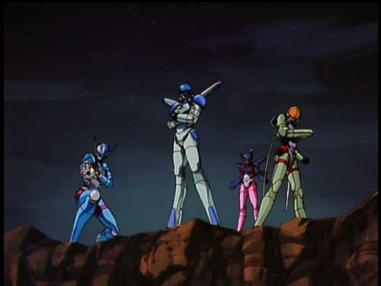
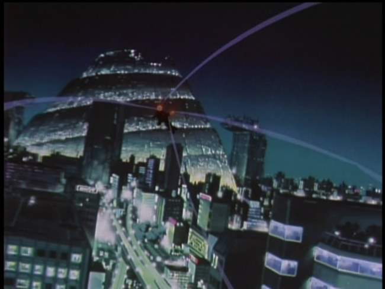
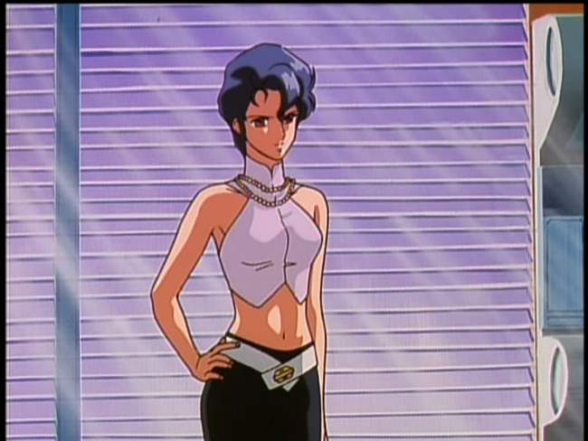
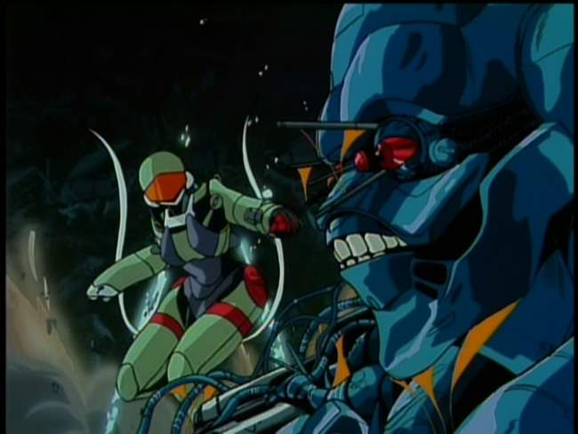
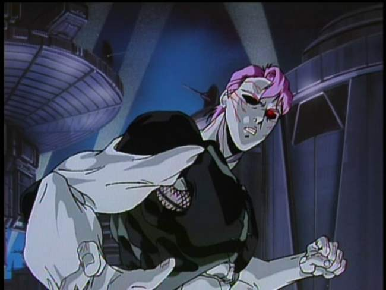
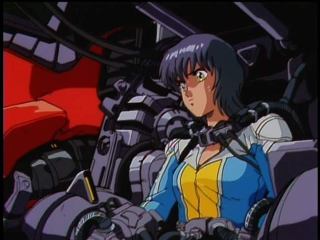
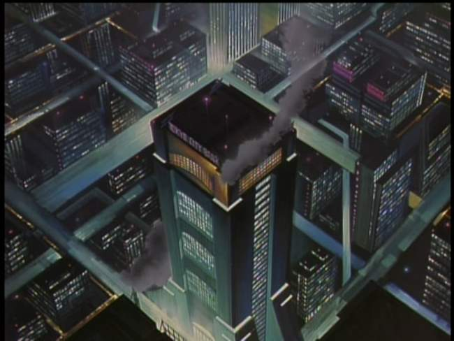
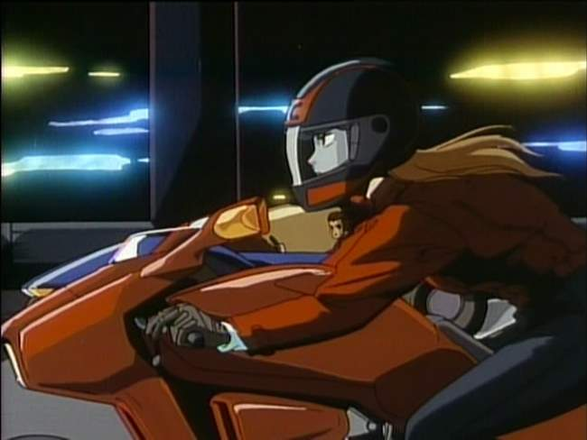
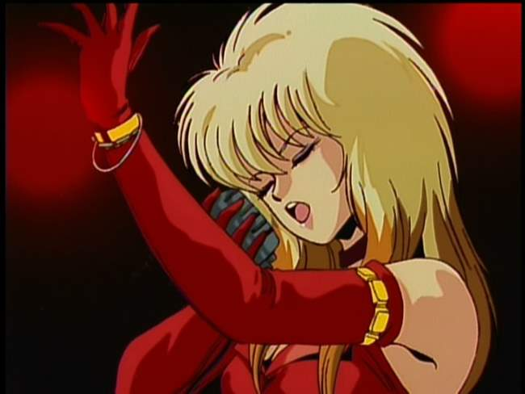
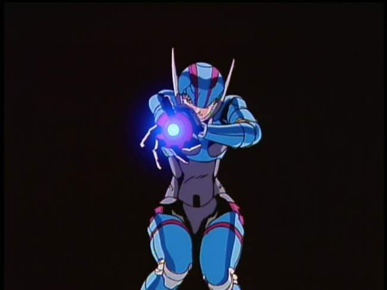

Movie review by : SFAM
Year : 1987
Directed by : Katsuhito Akiyama, et al.
Written by : Katsuhito Akiyama, et al., Toshimichi Suzuki (story)
Degree of Cyberpunk visuals : High
Correlation to Cyberpunk themes : Medium
Rating : 8/10
Key cast members :

Overview: Bubblegum Crisis (BGC) is one of the all-time classics of cyberpunk animation and anime in general. With a team of hawt chicks kicking butt in cute mecha outfits, while upbeat songs play in the background, Bubblegum Crisis has developed a franchise and staying power that few titles can match. Quite a number of sequels have been created as a testament to this. BGC is influential in a number of ways. Not only has its character animation been widely imitated, BGC was one of the first shows brought over in the US with subtitles. Overall, while there are some dark moments, the original BGC is an action-oriented, mostly light-hearted affair.

The Story: In 2025 an earthquake destroyed Tokyo. With the assistance of androids and robots created by the omnipresent and ever-powerful Genom corporation called boomers, Tokyo is rebuilt as Mega-Tokyo. Unfortunately, like Bladerunner, sometimes the boomers get out of line, often in fact. Boomers can appear human, but often this is just a fascade for a far more dangerous bio or mecha beast that can break-through the skin. In response to this danger, the authorities have created an under-funded agency called the AD Police, who's primary mission is to handle boomer incidents. Unfortunately, often the boomers are too strong for the police to handle.

Enter the Knight Sabers. Headed up by Sylia Stingray, the billionaire daughter of the former Genom Corporation scientist who invented boomers, Sylia has advanced the research on her father's mecha hard suits, and has recruited a team of three other hawt action chicks who, along with Sylia, comprise the Knight Sabers. All of them have secret identities. Priss is a pop singer, Nene is a hacker who works as a dispatcher at AD Police HQ, and Linna is an aerobics instructor. But all four of them have trained to become mercenaries extraordinaire in defense of boomer incidents.

Unlike most OAVs, BGC is designed with each episode being as self-contained story. While many of the stories string together, there are no cliffhangers here. Some of the episodes have at least a modicum of intrigue, but generally, when it gets right down to it, the goal is for the knight riders to kick some boomer ass. Action dominates, which works considering the relatively short time allotted to each story (up to 50 minutes). As the series continues, most of the storylines deal with the Kight Sabers foiling attempts by the Genom corporation to secure even more power. A few of the episodes have complex storylines, but the majority are straightforward, with evil genius types (boomer or human) directing boomer machines who create death and destruction.

For me, my favorite episode is Episode #5, where a two unique bio-based sexroid boomers who need blood for sustenance escape from escape Genaros, the SDPC's orbital supply station for humanity's moonbases, and make their way to Mega-Tokyo. The episode is far more complex than most, and touches on similar issues to Blade Runner, in that these Boomers just want to be free to live. Most of the boomers in BGC (other than the major villains) don't really exhibit any form of sentience, but the ones in this episode (and the continuation in #6) are sentient and multidimensional.

Influential Visuals: Along with Akira, BGC animation has been very influential in transforming anime to the popular style we see today. Characters with overly large eyes and the familiar facial styles are on display in BGC, as are a bevy of experimental looks and styles. The look of anime changed dramatically from the late 80s to the early nineties ? BGC will always hold a place in history due to its influence on this change.

Mega-Tokyo: BGC took the Blade Runner city visuals and applied them to anime, which was then imitated by most of the shows that followed. The cityscapes are modern looking with a blue background, with various green and red highlights. Grays and blues are shown in abundance, with occasional orange and red daytime scenes. Most of the shots are from above, focusing on the overall city-scape, but there are a number of ultra-modern buildings including the Genom's Tower (which looks like the Blade Runner Terrel Corporation building) and the AD Police building ? same as Blade Runner as well.

The Action: By far the best quality animation BGC brings is in their action sequences. While the rest of the series is really not very special, the action sequences are very well done. We get a variety of effects and perspectives that driving the relatively quick-pacing. In many of the scenes, the backgrounds show a variety of methods to enhance the speed and action. Often BGC engages in mecha-style battles (many of the bad-guy boomers are variations on mecha characters), but these are different from some in that the Kight Sabers are in nimble, tight-fitting suits, which increases the speed of the action.

The Music: Very few OVAs have music as recognizable as BCG. BGC is known for being one of the first (or at least one of the most recognized) to essentially embed music videos into their action sequences. The songs play a big part in Bubblegum Crises, with a large number of the action sequences and dramatic moments overlaid with song accompaniment. Almost twenty years later, this innovation has blossomed and morphed into what we see with FLCL for instance, where entire sequences are purely videos intertwined with the story.

The Bottom Line : While I'm generally not too excited about mecha anime (this is purely a preference on my part, and not a knock on mecha), I find BGC quite enjoyable. BGC is more like an earlier version of GITS SAC in that the focus is action first, and philosophy second. While a few episodes do explore what it means to be human, in all but a few cases, this is usually done in the context of a fairly light plot and intense action. Perhaps the philosophical aspects would have been highlighted had the series continued, but for legal reasons, BGC was cut short at only eight episodes. On pure enjoyment I'd probably rate the series a 7 out of 10, but due to its significant influence on anime and cyberpunk I'm giving it an extra star.